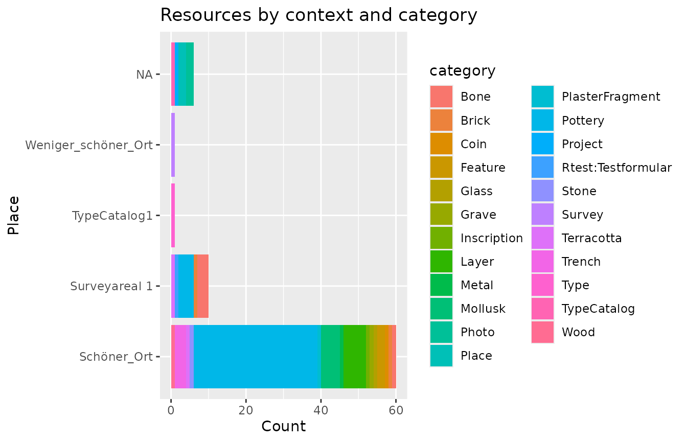
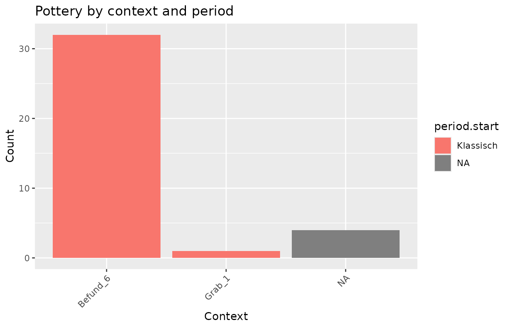
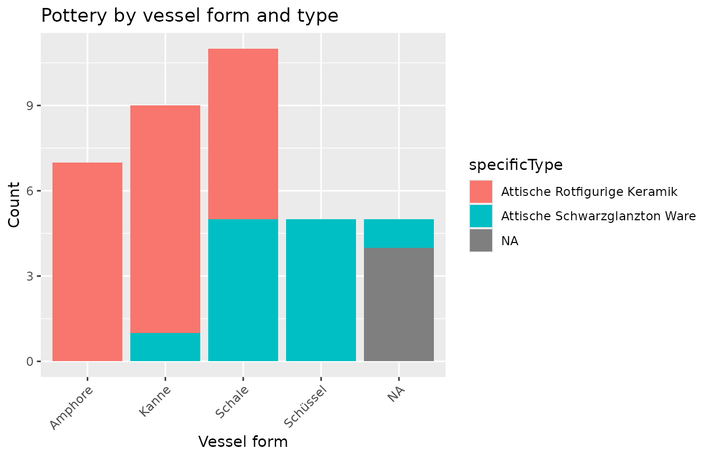

idaifieldR imports data from the iDAI.field 2 / Field Desktop database into R. The core functions of this package use sofa (available on CRAN) to connect to a running iDAI.field 2 or 3 (Field Desktop) client and store the whole database in a list in R (in memory), avoiding the csv-export that would otherwise be needed and gathering all documents at once, which is not possible with said csv-export. Any R-Script using idaifieldR to import the database can be re-run and updated with new data flexibly without exporting from the Field client itself.
idaifieldR encompasses functionality to clean up and format the
imported list objects for easier processing in R. Using
simplify_idaifield(), the UUIDs can be replaced with the
appropriate identifiers, the geometry can be reformatted to be usable
with R-packages for spatial analysis such as sp, a
preferred language for multi-language input fields can be selected, and
more. Be aware that processing all resources from the database at once
can be slow for larger databases and uses up a lot of memory.
Installation
Since idaifieldR is not available on CRAN (yet), we need to install it from GitHub. We can either download the current release from the idaifieldR-GitHub page and install from the file, or more conveniently use the devtools or remotes package to install it from GitHub directly:
require(remotes)
remotes::install_github("lsteinmann/idaifieldR")
library(idaifieldR)Loading the Database / Index
Our first step will be to load the complete database and create an object that serves as the index for further processing. First, create a connection object that will contain all the information R needs to connect to the database server Field Desktop uses:
conn <- connect_idaifield(serverip = "127.0.0.1",
pwd = "hallo")If you are using Field Desktop on the same computer, you should not
need the serverip-argument, as it defaults to the common
localhost address. Enter the password that is set in your Field
Desktop-Client under Tools/Werkzeuge > Settings/Einstellungen: ‘Your
password’/‘Eigenes Passwort’ as pwd. See the documentation
for more info and additional arguments:
If you want to follow along with this tutorial directly using the same data, load the backup file located at (‘inst/testdata/rtest.jsonl’) from the GitHub repository into a new project called ‘rtest’ in you Field Client. This demo dataset uses a very slightly customized project configuration to demonstrate relevant functions.
You can get the complete rtest-dataset into R using the
get_idaifield_docs()-function with the projects name
(projectname) and the connection-object named
conn that we created earlier (connection):
idaifield_test_docs <- get_idaifield_docs(connection = conn,
projectname = "rtest")If you are using RStudio, you can get a convenient look at the result
using View(idaifield_test_docs) or by clicking on the list
in the Environment-window. It is a named nested list with the custom
class idaifield_docs that contains one element for each
resource in the database and reflects the original
json-structure. The name of each list is the identifier of
the associated resource. The doc$resource sub-list contains
the actual entry for each resource, while the other sub-lists contain
information about the changes made to each resource along with its basic
data such as the UUID that Field Desktop uses internally as the
unique name of each resource. You can use this list to visualize changes
made to database entries on a time axis sorted by users, etc., but we
will continue to utilize idaifieldRs functions to work with
the actual data.
Though it is not necessary for further processing, you can use
idaifieldRs check_and_unnest()-function (see
?check_and_unnest()) to reduce the list to the resource
level:
idaifield_test_resources <- check_and_unnest(idaifield_test_docs)You will see that it is now an idaifield_resources
object and is taking up less memory. When browsing the object with
View(idaifield_test_resources) in RStudio, you can see that
is contains only the information of each ‘resource’, i.e. the actual
data you entered in Field Desktop. This step is automatically done by
idaifieldR-functions internally.
To get a very quick overview of our data, we generate an index of the database that contains only the most basic information about each object:
index <- get_uid_list(idaifield_test_resources,
verbose = TRUE,
language = "en")
head(index)| type | UID | identifier | isRecordedIn | liesWithin | shortDescription | liesWithinLayer |
|---|---|---|---|---|---|---|
| Layer | 02932bc4-22ce-3080-a205-e050b489c0c2 | Befund_6 | Schnitt 1 | SE02 | Context 6 | NA |
| Survey | 031179fb-ac01-6b29-b6fc-b1b486d9bff8 | Surveyareal 1 | NA | Weniger_schöner_Ort | NA | NA |
| Bone | 0324141a-8201-c5dc-631b-4dded4552ac4 | KNOCHEN_1 | Schnitt 1 | Grab_1 | Bone 1 | NA |
| Pottery | 0569d787-aa67-e105-3a27-cba29012e78e | Befund_6_KER_4 | Schnitt 1 | Befund_6 | Befund 6 Pottery | NA |
| RoomCeiling | 077a9be0-4cf4-4c99-af30-cb221c26ee05 | Decke | Building | NA | NA | NA |
| Pottery | 0860b5a5-4602-9feb-fabb-85610298bd93 | Befund_6_KER_18 | Schnitt 1 | Befund_6 | Befund 6 Pottery | NA |
The verbose = TRUE-argument mainly includes the short
description entered in the database, while language = "en"
controls which language from the multi-language text input field is to
be used. Switch it so language = "de" to see the difference
with the demo data. We can produce our first plot from the index that
will give us a very general idea about our data. I am using the
pipe-operator from dplyr and ggplot2 for
this:

As you can see, the demo data encompasses a variety of finds, that
are recorded in different “Layers” and “Trenches”. To get to the data
and produce some more useful plots, we will now simplify our
idaifield_test_resources-list.
Simplify the List
The function simplify_idaifield() takes several
arguments that control the output. You can learn more about them in the
documentation (?simplify_idaifield()). Mostly, it should
suffice to use the defaults and only pass the imported
idaifield_docs or idaifield_resources
list.
idaifield_test_simple <- simplify_idaifield(idaifield_test_resources,
keep_geometry = FALSE,
replace_uids = TRUE,
uidlist = index,
language = "en",
spread_fields = TRUE)
#> Keeping input values of selected language ('en') where possible.The function will also notify you that it tries to use the English
values from multi-language input fields if possible. If the respective
input field has no English value, simplify_idaifield() will
use the next available language (in alphabetical order). If you wish to
keep all languages from the multi-language input fields, you can use
language = "all". keep_geometry = FALSE
removes all coordinate information from the resources.
replace_uids is set to TRUE by default and
replaces UUIDs in the data with their corresponding identifiers to be
more readable. Checkbox fields as well as the campaign field are
automatically spread across multiple entries, so that they will be
stored in multiple columns in a matrix. If you dislike this behaviour,
set the argument spread_fields to FALSE. If
you process the complete database with this function, there is no need
to supply the index as we did just now, because it will generate its own
index. If, however, you choose to process only a subset of all data, you
need to supply an index of the complete database.
The list now has the idaifield_simple class. Browse the
resulting list by clicking on it in your Environment-window in RStudio
or use View(idaifield_test_simple). All
idaifield_...-objects carry the connection and name of the
project as attributes with them for later use. You can view them with
attributes(idaifield_test_simple).
If you wish to get the most out of you data, I recommend you use this
list and process it according to your own needs. However,
idaifieldR comes with a function that will turn the list
into a matrix. For this, it makes a lot of sense to select the data
first and get only the Pottery-resources that we want to work with. The
select_by()-function from idaifieldR can do
this for us (see the documentation at ?select_by())
pottery <- select_by(idaifield_test_simple, by = "type", value = "Pottery")Queries
The same outcome can be achieved by querying the database directly.
See the documentation of ?idf_index_query() and
?idf_query(). This may be useful when you frequently want
to update your data, but have a large amount of resources in the
database of which you only need a small subset:
pottery_docs <- idf_query(conn,
projectname = "rtest",
field = "type",
value = "Pottery")The query-functions will return idaifield_docs-lists
that (if you so wish) you still need to simplify. You need to
supply the index to the uidlist-argument, otherwise UUIDs
of relations cannot be replaced:
pottery_simple <- simplify_idaifield(pottery_docs, uidlist = index, language = "en")Transform the Lists to a Matrix / data.frame
In both cases, you should now have an idaifield_simple
object with 37 elements. This, we will turn into a matrix, or directly
into a data.frame to make plots easier:
pottery <- idaifield_as_matrix(pottery) %>%
as.data.frame()When viewing the resulting Pottery-data frame, you will
notice that the campaign-field has been converted to multiple columns.
If a custom configuration is present, this will happen to all custom
checkbox-fields, as there is no other way to conveniently deal with such
fields in a data frame. To make different or better use of it, try to
format the original list itself according to your needs.
From the data frame, we can produce some basic plots and take a look at the distribution of periods across our layers:

And another example:

Languages
There are currently two functions that will make it easier to replace the internal names of variables with their translations in different languages:
core_lang_list <- download_language_list(project = "core", language = "en")
milet_lang_list <- download_language_list(project = "Milet", language = "en")Since these functions download the Language configuration from github.com/dainst/idai-field, I would advise you to safe the result in a local RDS-file after you prepared everything. You can prepare a lookup-table like this:
lookup <- get_language_lookup(core_lang_list, language = "en")
lookup <- rbind(lookup, get_language_lookup(milet_lang_list, language = "en"))To get the translations from the Project configuration, you can use
the config-attribute from any idaifield_...-list. This will
also give you an impression of how the lookup-table is set up:
config <- attr(idaifield_test_simple, "config")
lookup_conf <- get_language_lookup(config$languages, language = "en")
head(lookup_conf)| var | label |
|---|---|
| Testformular | Testform |
| testCustomField | englisch testCustomField |
| testAnkreuzfeld | Test Checkboxes |
| testBoolean | english testBoolean |
You can use this to manually replace values for plots. The translations from valuelists can currently not be imported, so this only applies to the names of fields.
TLDR
To make a long story short and sum it up, there are two ways that you can get all your Pottery-resources into R. The following few lines are always necessary:
conn <- connect_idaifield(pwd = "hallo")
db <- get_idaifield_docs(connection = conn,
projectname = "idaifieldr-demo")
index <- get_uid_list(db)Using the following few lines and all default arguments while selecting from the whole database:
pottery <- db %>%
select_by(by = "type", value = "Pottery") %>%
# Note: simplify_idaifield() needs the index of the complete project database
# as a lookup-table to replace all UUIDs with their identifiers
simplify_idaifield(uidlist = index) %>%
idaifield_as_matrix() %>%
as.data.frame()Or using the following few lines with direct queries to the database:
pottery <- idf_query(connection = conn,
project = "idaifieldr-demo",
field = "type",
value = "Pottery") %>%
idaifield_as_matrix() %>%
as.data.frame()